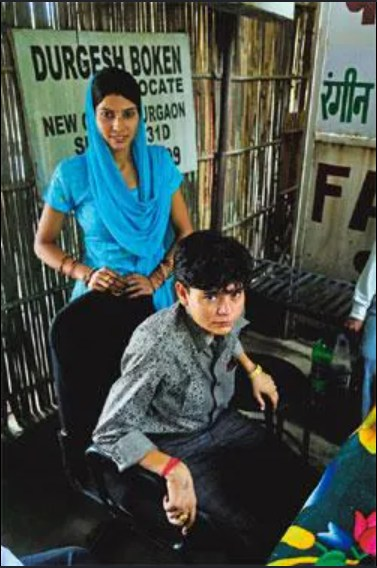

LANDMARK MATTER
A 2011 Gurgaon protection matter that brought national attention to personal liberty, honour-based threats and the right of consenting adults to live without fear.

In July 2011, long before conversations around same-sex marriage had entered mainstream legal discourse in India, a young couple from western Uttar Pradesh arrived in Gurgaon seeking something far more fundamental than recognition — they sought safety.
Savita and Veena, two women who wished to build a life together, alleged that they faced severe threats from family members and feared becoming victims of an honour killing.
They approached the Gurgaon court seeking protection and the right to live without fear.
Advocate Durgesh Boken represented the couple in subsequent proceedings as the matter gained national attention and sparked conversations across the country.
The matter was widely reported by the national media and was often described as India's first lesbian marriage case.
Legally, however, the proceedings became significant because the court recognised the couple's right to protection and their right to live together as consenting adults.
At a time when conversations around LGBTQ+ rights remained socially contested, the case stood for larger constitutional principles of liberty, dignity and personal choice.
The couple alleged that they faced intense pressure and threats from relatives and community members because of their relationship.
The court's intervention therefore became not merely a legal development, but a statement against violence and coercion.
Reports from the period indicate that the couple was moved to a secure location due to safety concerns and later expressed a desire to return to their native place.
📍 July 2011 — Couple enters into a relationship and seeks legal protection.
📍 Gurgaon Court grants police protection against threats.
📍 National media reports the matter as a landmark case involving a same-sex couple.
📍 The case becomes an important chapter in India's evolving conversation on equality, dignity and personal liberty.
More than a decade later, the case remains an important milestone in India's broader conversation surrounding individual freedom and the right of consenting adults to make personal choices.
For Advocate Durgesh Boken, the matter represents one of the profession's most fundamental duties — ensuring that every person, irrespective of social acceptance or personal circumstances, can seek protection under the law and have their voice heard before the courts.